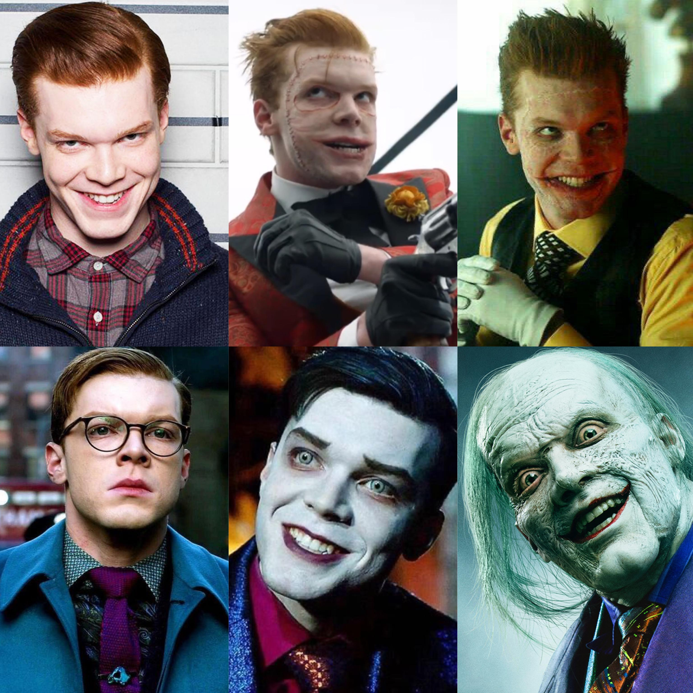
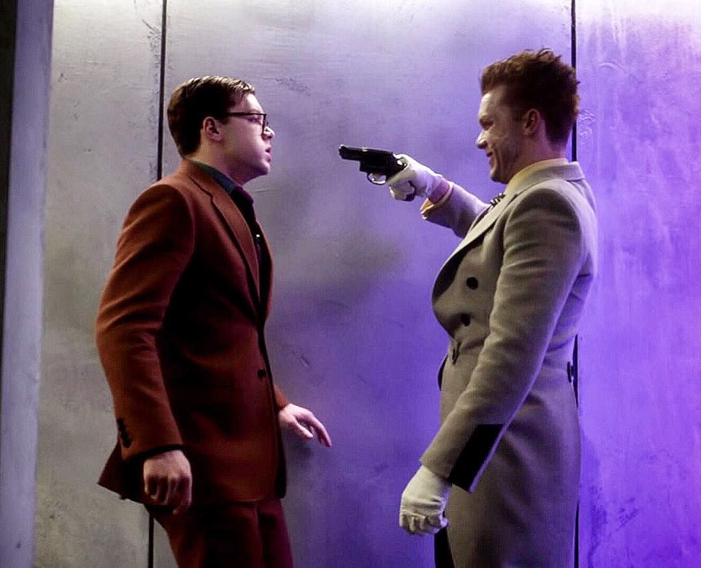

Análisis según los procesos mentales
Dos mentes distintas: caos e impulso frente a control y planificación.
Contexto general
Jerome y Jeremiah Valeska son personajes de la serie Gotham. Aunque son hermanos, tienen formas muy diferentes de ver el mundo, relacionarse con los demás y tomar decisiones. Esta presentación los analiza a través de ocho procesos mentales.
Impulsivo, provocador y muy expresivo en su violencia. Convierte su dolor en espectáculo.
Reservado, calculador y obsesionado con tener ventaja. Su peligro es silencioso.

Antes del análisis
Representa la versión más impulsiva, pública y descontrolada de esa figura. Aparece primero y deja una marca fuerte en Gotham por su violencia y su influencia sobre otros.
Muere antes que Jeremiah, pero su impacto en la ciudad y en su hermano define lo que viene después.
Representa la versión más fría, calculadora y obsesiva. Después de la muerte de Jerome, cambia radicalmente y toma un camino más silencioso y planificado.
No llegan a ese estado al mismo tiempo: primero Jerome, luego Jeremiah — dos caminos hacia la misma oscuridad.
La serie usa a estos dos hermanos para mostrar cómo podría construirse una mente parecida a la del Joker desde distintos caminos.
No son "el Joker" directamente — son dos formas distintas de representar una misma oscuridad.
Proceso mental 1
Forma en que una persona interpreta e integra la realidad.
Percibe Gotham como una ciudad falsa, cruel e hipócrita. Su pasado de abuso y sufrimiento lo lleva a ver la sociedad como algo roto que merece ser expuesto en su peor versión.
Frente a multitudes actúa como si toda la ciudad fuera un escenario — no parece ver personas sufriendo, sino espectadores reaccionando a lo que él hace.
Interpreta el mundo como una amenaza constante. El miedo a Jerome y el aislamiento hacen que vea cualquier cosa externa como un peligro difícil de confiar.
Vive escondido en un búnker: esa decisión muestra que percibe el exterior como algo inestable y peligroso que necesita controlar.
Ambos interpretan la realidad desde experiencias traumáticas, pero responden de forma distinta.
Jerome ve el mundo como algo absurdo y cruel; Jeremiah lo ve como un peligro que debe mantener bajo control.
Proceso mental 2
Capacidad de concentrarse en ciertos estímulos y filtrar el resto.
Dirige su atención hacia la reacción de los demás. Le importa que Gotham lo mire, que hable de él y que sus actos generen miedo o sorpresa en el mayor número de personas posible.
Elige lugares públicos y cámaras no solo para cometer un crimen, sino como si estuviera dando una presentación — busca una respuesta emocional fuerte.
Presta atención a los detalles. Observa el entorno, analiza a las personas y calcula cómo usar cada elemento a su favor. No necesita ser el centro de atención todo el tiempo.
Cuando prepara ataques contra Gotham o Bruce Wayne, estudia la situación, anticipa reacciones y arma sus movimientos con precisión.
Jerome se enfoca en provocar una reacción inmediata; Jeremiah en preparar el resultado que quiere conseguir.
Jerome busca miradas; Jeremiah busca control.
Proceso mental 3
Capacidad de conservar experiencias del pasado y usarlas en el presente.
Recuerda el maltrato, el rechazo y la violencia que vivió, y transforma ese dolor en burla, odio y agresividad. Su infancia en el circo y la relación con su madre explican gran parte de su forma de actuar.
Cuando se revela su historia familiar, se nota que tiene mucho resentimiento acumulado que no desaparece, sino que se convierte en una forma de atacar al mundo.
Para él, Jerome representa una amenaza permanente. El recuerdo de su hermano lo lleva a desconfiar, aislarse y vivir siempre en alerta — es la figura que condicionó toda su vida.
Jerome no es solo un familiar conflictivo: es el recuerdo que lo hizo sentir vulnerable y que convirtió su pasado en una necesidad constante de protección.
En los dos casos, la memoria influye en sus decisiones de manera directa.
Jerome convierte su dolor en violencia directa; Jeremiah convierte su miedo en distancia, cálculo y control.
Proceso mental 4
Capacidad de razonar, relacionar ideas y resolver problemas.
Piensa de forma impulsiva, exagerada y teatral. Sus planes no buscan solo un objetivo práctico: también buscan generar impacto, desorden y una sensación de ruptura en Gotham.
Cuando lidera criminales, no le alcanza con ganar o escapar — quiere que todo sea llamativo y difícil de olvidar. Cada acto tiene que dejar una marca.
Piensa de forma fría y estructurada. Analiza Gotham como un sistema que puede ser manipulado. No actúa tanto por impulso, sino a partir de una idea previa que intenta cumplir.
Sus ataques suelen estar preparados con anticipación: busca tener ventaja antes de mostrarse y usa la información que tiene para manipular la situación.
Los dos resuelven problemas, pero con métodos opuestos.
Jerome actúa desde la improvisación y la intensidad; Jeremiah desde el cálculo y la estrategia.
Proceso mental 5
Sistema para comunicarse, expresar ideas e influir en los demás.
Usa risas, bromas crueles, gritos y discursos provocadores. Habla de forma exagerada y dramática porque busca alterar emocionalmente a quienes lo escuchan, no solo comunicar algo.
Frente a multitudes no solo amenaza: intenta convencer a otros de que seguir su caos puede ser liberador o divertido — convierte la violencia en espectáculo social.
Usa un lenguaje tranquilo, elegante y calculado. No necesita levantar la voz para influir en alguien. Sus palabras son más frías y están pensadas para entrar en la mente del otro.
Con Bruce habla como si existiera una conexión especial entre ellos — usa esa idea para hacerlo dudar de sus valores y acercarlo a su propia visión.
Ambos usan el lenguaje para influir, pero con estilos distintos.
Jerome busca contagiar una emoción intensa; Jeremiah busca instalar una idea lentamente.
Proceso mental 6
Capacidad de adaptarse, resolver problemas y alcanzar objetivos.
Sabe provocar, leer la reacción del público y convertirse en una figura que otros criminales quieren seguir. Aunque parezca desordenado, entiende muy bien cómo generar impacto.
Logra inspirar a delincuentes de Gotham y transformarse en un símbolo — su peligro no está solo en lo que hace, sino en cómo puede empujar a otros hacia la violencia.
Diseña planes complejos, usa tecnología y piensa a largo plazo. Su inteligencia está relacionada con la organización, el cálculo y la manipulación de situaciones.
Sus ataques contra Gotham muestran una planificación elaborada — no actúa por emoción, sino usando personas, estructuras y recursos para cumplir sus objetivos.
Los dos son peligrosos por su inteligencia, pero en dimensiones distintas.
Jerome entiende cómo mover emociones colectivas; Jeremiah entiende cómo mover piezas dentro de un plan.
Proceso mental 7
Capacidad de pensar sobre los propios pensamientos, evaluar decisiones y modificar la conducta.
Entiende que sus acciones provocan miedo y llaman la atención, pero no usa esa conciencia para frenarse ni cuestionarse. Al contrario, la usa para reforzar la imagen que quiere mostrar.
Sabe que todos lo miran cuando actúa frente a cámaras — no actúa de manera inocente: entiende el impacto que genera y lo aprovecha para transformarse en una figura pública del terror.
Es consciente de sus miedos, de su historia con Jerome y de cómo eso lo marcó. Sin embargo, no usa esa conciencia para sanar, sino para justificar su aislamiento y su necesidad de sentirse protegido.
Al vivir escondido y preparar planes desde la distancia, reconoce su vulnerabilidad — pero en vez de enfrentarla, la convierte en desconfianza y manipulación.
Los dos tienen cierta conciencia sobre sí mismos, pero la usan de manera negativa.
Jerome la usa para reforzar su personaje; Jeremiah la usa para defenderse del mundo y dominar lo que lo rodea.
Proceso mental 8
Capacidad de generar ideas nuevas y transformar la realidad de una manera original.
Sus crímenes son escenas llamativas, casi como si quisiera dejar una marca en la ciudad. Su creatividad mezcla miedo, humor cruel y provocación en una sola actuación.
Cuando usa discursos, cámaras y situaciones públicas, no busca solo hacer daño — quiere que sus actos sean recordados y que otros se sientan atraídos por romper las reglas.
Su creatividad no se expresa en shows públicos, sino en planes complejos. Imagina formas de manipular personas, usar tecnología y transformar Gotham según su propia visión.
Cuando prepara ataques contra Bruce o la ciudad, cada parte parece tener una función — arma situaciones donde intenta controlar lo que otros sienten, piensan o hacen.
Ambos son creativos, pero en sentidos distintos.
Jerome crea impacto a través de la provocación; Jeremiah crea sistemas para manejar la realidad a su favor.
Factor externo
Gotham
Ciudad corrupta que no solo los contiene, sino que también amplifica y potencia lo peor de cada uno.
Jerome la usa
Usa la ciudad como escenario para mostrarse, provocar miedo y expandir su mensaje a través de los medios.
Ej. En vez de esconderse, se muestra públicamente porque Gotham le da el escenario perfecto para amplificar su caos.
Jeremiah la rediseña
Se relaciona con Gotham como algo que puede transformar según su propia lógica, no solo destruir.
Ej. Su búnker y el miedo a Jerome refuerzan su necesidad de controlar el entorno desde adentro y a distancia.
Bruce Wayne es clave para ambos: Jerome quiere corromperlo y demostrar que incluso alguien como él puede caer en la violencia. Jeremiah, en cambio, busca que Bruce lo vea como su igual y usa esa idea para manipularlo psicológicamente.
Gotham no solo los contiene: también refleja sus diferencias y potencia lo peor de cada uno.
Comparación directa

Jerome puede aparecer de repente y causar pánico ahora mismo. Jeremiah puede llevar meses preparando algo sin que nadie lo note.
Cierre
Jerome
Jeremiah
Jerome y Jeremiah muestran cómo el pasado, el entorno y las relaciones pueden modificar profundamente los procesos mentales. Jerome transforma su sufrimiento en violencia e influencia sobre otros. Jeremiah convierte sus inseguridades en planes, manipulación y control. Además, ambos tienen metacognición y creatividad, pero no de una manera positiva.
Dos hermanos, dos mentes opuestas, una misma oscuridad.
Serie Gotham · Análisis Psicológico
NG Producciones